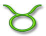
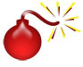

Trojan Detection

What is a Trojan?
A Trojan is small, malicious programme that is installed along with
a more attractive one. For example, that great freeware programme you
got from that dodgy website? It may well be the programme you wanted.
But someone (usually a 3rd party) may well have attached a Trojan to
it. The Trojan will be installed as well as the software you wanted.
Trojans are not viruses, in the sense that they don't replicate or
send copies of themselves to others. They are just another programme
that can be installed on your computer, albeit a nasty one!
What do Trojans do?
A Trojan can be very malicious indeed. Most of them are intent on controlling
your PC. These are called Remote Access Trojans, or RATs for short.
If someone has placed a Trojan on your computer, they'll be able to
see everything that you can. Some of them can even controll your webcam.
That means the attacker can see you! If you have speakers attached to
the PC, they can even hear you!
If that weren't bad enough, the attacker will have access to your computer,
enabling him to upload nasty things to your PC. After all, why should
he store these things on his computer when he has access to yours?
Most Trojans these days, though, are placed on your computer by criminals.
If you type your credit card details in to a website, for example, then
the attacker can record what you type. If a criminal has controll of
a lot of computer, he could also launch something called a Denial of
Service attack. A DoS attack is when a lot of malicious computers attack
a particular network or website. The network has so many request that
it can't cope, so has to shut down. The criminals then blackmail the
owner ("We'll let you have your site back if you give us money".)
Many gambling sites have been hit by this type of attack.
A Trojan can also disable your security software, leaving you wide
open on the internet.

How do trojans get on My Computer?
If you have an unpatched version of a Windows operating sytem (XP,
ME, W98, etc) that is allowed on the internet then you have a very high
chance of becoming infected. Install Service pack 2 as matter of urgency.
And get all the other Windows updates. If you browse using Internet
Explorer then be aware that it is notorius for being unsecure. (At one
stage, it was known as the Swiss Cheese browser because it had so many
holes in it!) even with all the latest patches, someone is always trying
to find a new hole in Internet Explorer. If an attacker can guide you
to a particular website, then your browser's security holes can be a
way for them to load programmes onto your PC. A lot of people have switched
to using a browser other than Internet Explorer, the most popular choice
being Firefox.
But Trojans can get on to your PC many other ways: email attachments,
software/music downloads, unsafe Instant Mesaage clients, IRC, Peer
2 peer downloads, open ports not protected by a firewall - the list
is long!
If I have Anti-Virus software, does that mean I am protected?
You are not necassirly protected from Trojans, just because you have
Anti-Virus software on your computer. If you have Norton or Mcafee please
remember this: Most popular does NOT mean best! (See our Anti-Virus
section for more details.) The problem faced by the makers of Anti-Virus
software is that Trojans are easily adapted, and new versions come out
all the time. Anti-Virus software makers are constantly playing catch-up.
That's why it's important to update your Anti-Virus software on a regular
basis. Besides, a really good trojan can disable your Anti-Virus.
How Can I Protect Myself?
The best defense against Trojans is a dedicated Trojan scanner. There
is a free online Trojan scan you can do here:
Free
Trojan Scanner
Consider buying separate software just for Trojan protection. Not only
will these detect the latest threat, but they will also rid your computer
of any infection.
Trojans can be far more harmful than viruses, so it's well worth getting
the right tool for the job. Don't skimp in this area!
<--Back One Page Move
on to the next Guide -->
<--Back to the
Beginner's Computing Contents Page
View all our Home Study Computer
Courses
 home
home